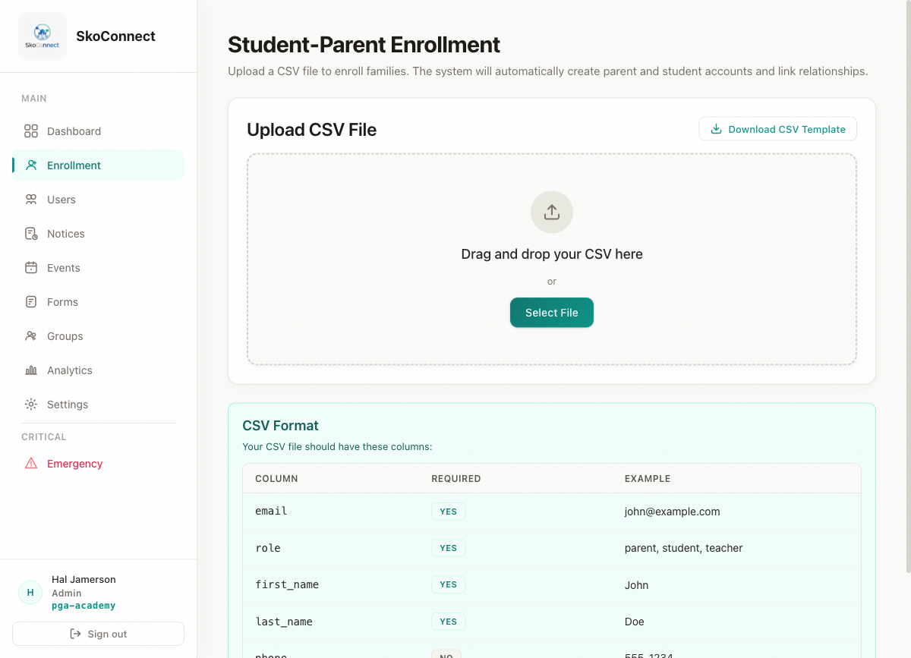
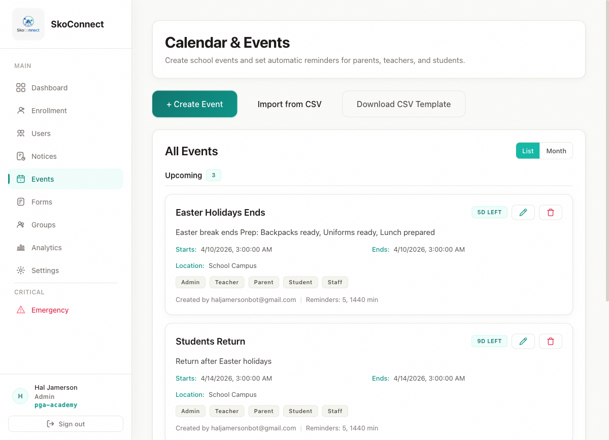
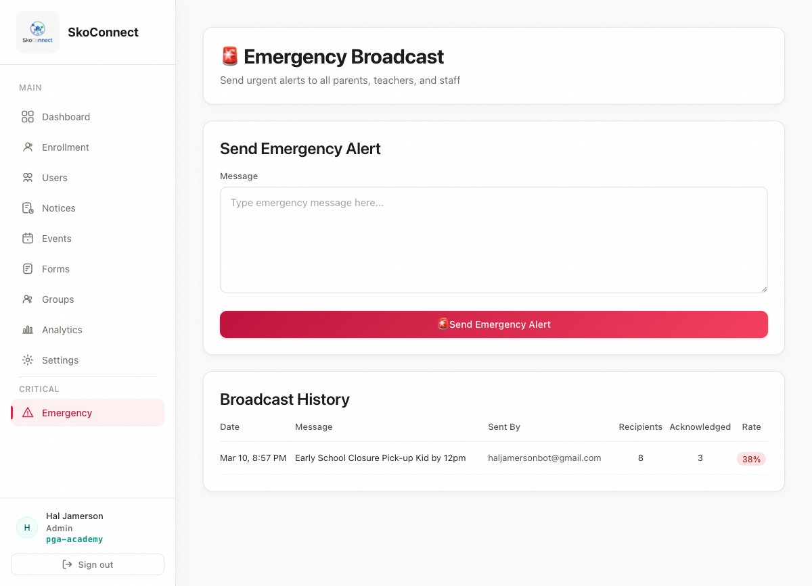
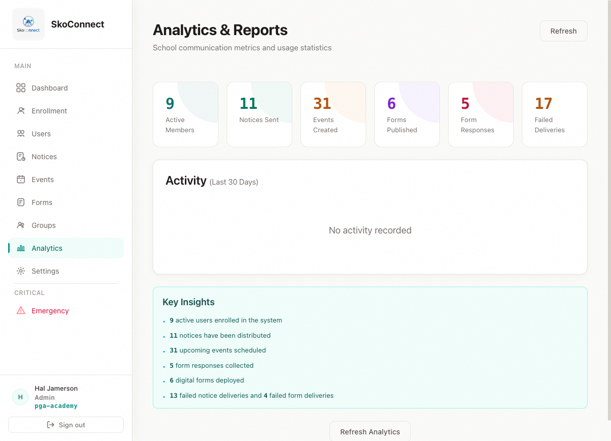

2026-04-02
SkoConnect Documentation v1.0 | Last updated: 2026-04-02
This guide is the comprehensive reference for everything you can do as a school administrator in the SkoConnect admin portal. It covers every page, every feature, and every workflow available to you.
As an administrator, you have full control over your school’s SkoConnect instance. Here’s a summary of your capabilities:
| Feature | What You Can Do |
|---|---|
| Dashboard | View school metrics and quick actions |
| Enrollment | Upload CSV files to create user accounts in bulk |
| User Management | Search, create, edit, and deactivate users |
| Notices | Create, edit, delete, and target announcements |
| Calendar & Events | Create events with automatic reminders |
| Digital Forms | Build forms, use templates, and track submissions |
| Form Templates | Browse and customize pre-built form templates |
| Emergency Broadcast | Send urgent alerts and track acknowledgments |
| Groups | Create and manage user groups |
| Analytics | View usage metrics across your school |
Each section below is self-contained — you can jump to any section without reading the whole guide.
Note: This guide covers the admin portal only (the web interface). If you’re looking for mobile app guidance, see the Quick Start and SOP guides for your role.
The Dashboard is your home base after logging in. It provides a snapshot of your school’s activity.
The sidebar on the left is your main navigation. Click any item to go to that page:
Tip: If the sidebar is hidden, look for a menu icon (hamburger icon) in the top-left corner of the screen and click it to expand the sidebar.
The Enrollment page is where you add users to your school in bulk using a CSV (spreadsheet) file. This is the fastest way to get your entire school community set up on SkoConnect.
Before uploading, your CSV file must follow this format:
Required columns:
| Column | Description | Example |
|---|---|---|
email |
User’s email address | jane.doe@school.edu |
role |
One of: admin, teacher,
parent, student, staff |
teacher |
first_name |
User’s first name | Jane |
last_name |
User’s last name | Doe |
Optional columns:
| Column | Description | Example |
|---|---|---|
phone |
User’s phone number | (555) 123-4567 |
parent_email |
For students only — links to parent account | john.doe@email.com |
Example CSV (first 5 rows):
email,role,first_name,last_name,phone,parent_email
admin@school.edu,admin,Maria,Santos,(555) 100-0000,
jane.doe@school.edu,teacher,Jane,Doe,(555) 100-0001,
john.doe@email.com,parent,John,Doe,(555) 100-0002,
emma.doe@email.com,student,Emma,Doe,,john.doe@email.com
mark.smith@school.edu,staff,Mark,Smith,(555) 100-0003,Important: The first row must be column headers exactly as shown. The CSV must use commas as separators. Maximum 400 rows per upload.
After uploading, you’ll see a results summary:
Tip: If you see errors, open your CSV in a spreadsheet app, fix the problematic rows, and re-upload. The system will skip any users who already exist, so you won’t create duplicates.
→ For detailed enrollment instructions, see Enrollment Deep-Dive

The Users page lets you view, search, create, edit, and deactivate individual user accounts.
The user will receive an invitation email with instructions to set their password.
A deactivated user can no longer log in, but their data (notices, form submissions, etc.) is preserved. You can reactivate them at any time.
If a parent account wasn’t linked to a student during enrollment, you can link them manually:
You can select multiple users using the checkboxes next to each row, then apply bulk actions like deactivation or role changes.

Notices are the primary way to communicate with your school community. They appear in the mobile app and can be targeted to specific audiences.
Categories help organize notices visually. When you create a notice, you can assign one of these categories:
| Category | Color | When to Use |
|---|---|---|
| School Announcement | Blue | General school-wide news |
| Alert | Red | Important warnings or urgent but non-emergency updates |
| Exam | Blue | Exam schedules, study tips, test results |
| Event | Blue | Event reminders and details |
| Sports | Green | Sports schedules, team announcements, game results |
| Holiday | Purple | Holiday schedules, school closures |
You can target notices to reach the right people:
Tip: Combining role and grade targeting helps you reach exactly the right audience. For example, target “Grade 5 Parents” to send exam information only to families with 5th graders.
Note: Even after editing or deleting, push notifications may have already been delivered. Always double-check your notice before sending.

Events appear on the school calendar in the mobile app. You can set automatic reminders so attendees get notified before an event starts.
The Events page includes a built-in calendar view. You can navigate between months by clicking the arrow buttons. Each day cell shows events scheduled for that day.
Tip: If you change the date or time of an event after it’s been created, the reminder schedule stays the same relative to the new time.

Digital forms replace paper handouts. Parents and students fill them out on their phones, and you can track who has and hasn’t responded.
Instead of starting from scratch, you can use a pre-built template:
Tip: Use the export option (if available) to download submissions as a file for your records.
→ For detailed form instructions, see Digital Forms Deep-Dive

SkoConnect includes pre-built form templates for common school needs. You can use these as starting points and customize them for your school.
| Template | Purpose | Fields |
|---|---|---|
| Field Trip Permission Slip | Collect parent permission for off-campus trips | Student name, class, destination, date, parent name, signature, emergency contact, medical notes |
| Medical Consent Form | Authorize medical treatment and share health information | Student name, class, allergies, current medications, doctor name, parent authorization, emergency contact |
| Photo/Video Release Form | Get permission to use photos and videos of students | Student name, class, parent name, consent checkbox, restrictions |
| Emergency Contact Form | Collect up-to-date emergency contact details | Student name, class, primary contact name, phone, relationship, secondary contact, doctor name, special notes |
| Technology Use Agreement | Establish acceptable use rules for school devices | Student name, class, parent name, agreement checkbox, signature, date |
If you build a form you want to reuse, you can save it as a template:
Emergency broadcasts are for urgent, time-sensitive communications that require immediate attention — safety incidents, weather closures, or other critical situations.
Use the Emergency Broadcast feature when:
Important: Do NOT use emergency broadcasts for routine announcements. Use regular notices for everyday communication. Overusing the emergency channel reduces its impact when a real emergency occurs.
Warning: Emergency broadcasts cannot be edited after sending. Double-check your message and audience before clicking Send.
After sending a broadcast, you can see who has and hasn’t acknowledged it:
→ For detailed emergency broadcast guidance, see Emergency Broadcast Deep-Dive

Groups let you organize users by class, department, team, or any other category. This makes it easier to target communications to specific subsets of your school.
Tip: Groups are useful for sending notices and events to specific subsets of your school. When creating a notice or event, look for the option to target by group.
The Analytics page gives you a high-level view of how your school is using SkoConnect.
This data helps you understand whether your communications are reaching your community effectively.
Note: Analytics data updates periodically. You may not see real-time numbers immediately after sending a notice or creating an event.

Your school has five roles, each with different permissions:
| Role | Can Do |
|---|---|
| Admin | Everything — manage users, enrollment, notices, events, forms, emergency broadcasts, groups, analytics |
| Teacher | Create notices, events, and forms. View users. Cannot manage enrollment or other users. |
| Staff | Same permissions as teachers — create notices, events, and forms. Cannot manage users or enrollment. |
| Parent | View notices, events, and forms. Submit forms. Cannot create content. Mobile app only. |
| Student | View notices, events, and forms. Submit forms. Cannot create content. Mobile app only. |
If a user forgets their password:
Note: You cannot see or set a user’s password directly. The reset link is sent to the user’s email address.
| Problem | Solution |
|---|---|
| CSV upload shows “invalid headers” | Make sure your first row contains exactly these headers:
email, role, first_name,
last_name. No spaces, no extra columns, exact
spelling. |
| CSV upload shows duplicate errors | Those email addresses already exist in the system. This is normal — the system skips them. You don’t need to remove them from your CSV. |
| A user can’t log in after enrollment | The user needs to set their password first. They should check their email for the invitation link. If they didn’t receive it, reset their password from the Users page. |
| My notice isn’t reaching specific parents | Check your target audience settings. If you selected a specific grade, only parents with children in that grade will see the notice. |
| Emergency broadcast not delivering | Check your internet connection. Emergency broadcasts require a stable connection. If the issue persists, check the acknowledgment list to see which recipients received the broadcast. |
| Analytics data seems outdated | Analytics update periodically, not in real time. Check back in a few minutes after sending content. |
| Can’t find a user I just created | The user list may need to be refreshed. Try searching for the user by email or click the refresh button. |
| I need to change a user’s role | Go to Users, find the user, click on their profile, and change the role dropdown. Click Save Changes. |
Q: How many users can I enroll at once? A: You can upload up to 400 rows in a single CSV file. If you have more users, split them across multiple uploads.
Q: Can a user have more than one role? A: No. Each user has exactly one role. If someone needs different permissions, contact your SkoConnect representative.
Q: How do I remove a user from SkoConnect entirely? A: Currently, you can deactivate a user (they won’t be able to log in), but their data is preserved. If you need to permanently remove a user, contact your SkoConnect representative.
Q: Can I send a notice to a specific group? A: Yes. When creating a notice, look for the option to target by group in the audience settings.
Q: What happens to a user’s data if I deactivate them? A: Their data (notices, form submissions, event history) is preserved. They just can’t log in until you reactivate their account.
Q: Can I see which parents have read a specific notice? A: Yes. Notices include read receipt tracking. Open the notice details to see how many recipients have opened it.
Q: How do I add a new administrator? A: Create a new user with the “admin” role from the Users page. They’ll receive an invitation email with login instructions. You can have as many administrators as your school needs.
Q: What’s the difference between deactivating a user and deleting a notice? A: Deactivating a user stops them from logging in but keeps their data intact. Deleting a notice removes it from the feed entirely. Both actions can have significant impacts — deactivate users when someone leaves the school temporarily, and delete notices only when you’re sure you no longer need them.